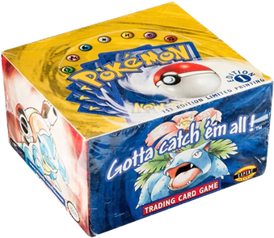
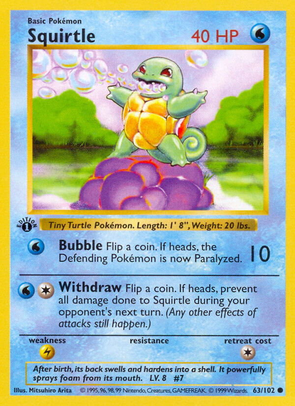

Base Set
Base Set
January 1999
Base Set is the first expansion of the Pokémon TCG, and is arguably the most influential. It defines vintage, and some of the cards are the crowned jewels of the entire game.
History
Base Set was released on January 9, 1999, with 102 cards included. It was the first set to be produced by Wizards of the Coast (WotC). When in production, the set had three major print runs, with the first printing being referred to as 1st Edition, because of the "1st Edition" stamp in the bottom left corner of the card artwork. This is the same stamp that I used for the icon, as Base Set didn't have a stamp!

Let's start with taking a look at the 1st Edition print run. These cards were extremely limited, so these are by far the most desirable to exist. As mentioned earlier, 1st Edition cards are identifiable by the "1st Edition" stamp in the bottom-left corner of the artwork, and with a lack of a shadow around the artwork border.

The second print run was identical to the 1st Edition run, but cards lacked the 1st Edition stamp. Because of this, this run is called "Shadowless," because the artwork border doesn't have a shadow on its border, in contrast to the third print run. While these cards aren't as rare or desirable as its stamped counterparts, it is still more valuable than unlimited.
The third (and fourth, technically) print run is the largest and most common printing of Base Set. These cards are easily identifiable from the shadow on the artworks border; This run is called "unlimited." I mention it being the third and fourth because the only difference between the two is the copyright date at the bottom, with the third reading "©1999" and the fourth "©1999–2000." This is quite literally the only difference, but one to keep in mind.